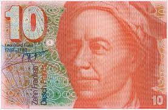
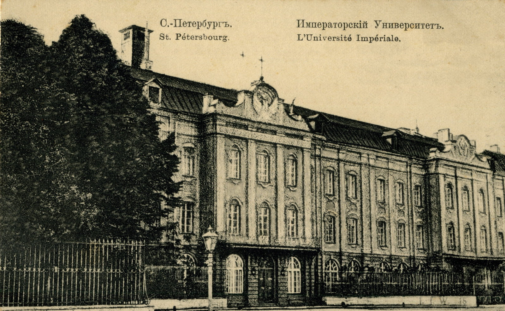
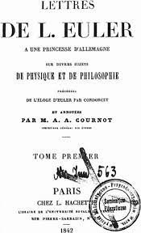
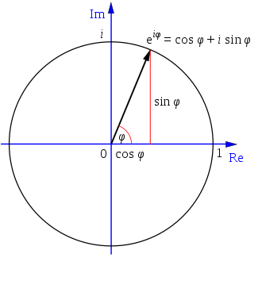

Leonhard Euler (ur. 15 kwietnia 1707 r. w Bazylei, zm. 18 września 1783 r. w Petersburgu) był to szwajcarski matematyk i fizyk, w obu tych dziedzinach dokonał wielu odkryć, swoje życie spędził głównie w Rosji oraz Prusach.

Z uwagi na tytuł jednego z najwybitniejszych matematyków Euler został ukazany na 10-frankowym banknocie szóstej serii
Euler urodził się w rodzinie protestanckiej, gdzie jego ojciec był pastorem kalwinizmu. Swoje dzieciństwo spędził w Riehen, gdzie ojciec przekazywał mu wiedzę matematyczną oraz uczył na duchownego. Z uwagi na przyjaźń rodziny Eulera z klanem Bernoullich jeszcze bardziej wciągnęła go matematyka.
W 1720 roku rozpoczął on studia filozoficzne na Uniwersytecie w Bazylei. Jednak Bernoulliego odkrył w synu Paula talent matematyczny i przekonał go do specjalizacji syna w tej dziedzinie. Wkrótce otrzymał stopień magistra filozofii i rozpoczął studia nad teologią, greką i językiem hebrajskim. W 1726 roku obronił on rozprawę doktorską na temat rozchodzenia się dźwięku "De Sono". W 1727 r. wyjechał do Petersburga, gdzie z polecenia syna Bernoulliego stał się wykładowcą fizjologii, jednak prędko z posady na wydziale medycznym awansował na bardziej odpowiadający mu matematyczny. Dzięki posadzie medycznej zaangażował się jednak w służbie medycznej rosysjkiej marynarki wojennej, co spowodowało przychylniejsze spojrzenie rosyjskich władz.
Petersburski Uniwersytet Państwowy, który został założony przez Piotra I stanowił sporą okazję dla takich jak Euler cudzoziemskich naukowców, ponieważ chciał zmniejszyć dystans w nauce Rosji od zachodnich państw, jej fundusze również były zasobne. Jednak za panowania Piotra II arystokracja zyskała na sile, natomiast była ona podejrzliwa co do cudzoziemskich naukowców. Niedługo po jego śmierci, w 1731 roku został profesorem fizyki i po Bernoulliegim, który wyjechał z Rosji przejął wydział matematyki. W 1734 r. z kolei ożenił się z Katarzyną Gsell, z którą miał łącznie trzynaścioro dzieci, co czyniło go jednym z najbardziej płodnych matematyków w historii.

Petersburski Uniwersytet Państwowy
Za propozycją Fyderyka II 19 czerwca 1741 roku wyjechał z Petersburga i przez 25 lat mieszkał w Berlinie, gdzie objął stanowisko w Pruskiej Akademii Nauk, został on tam nawet prywatnym nauczycielem siostrzenicy Fryderyka, księżniczki Anhalt-Dessau. Napisane do niej listy, których było około 200 zostały opublikowane jako "Listy do księżniczki niemieckiej" i stały się popularne, ponieważ zawierały eulerowskie rozjaśnienia tematów związanych z fizyką i matematyką.

List do księżniczki niemieckiej
Wkrótce jednak Euler opuścił Berlin z powodu osobistego konfliktu z Fryderykiem, gdzie Fryderyk uważał go za prostego człowieka, natomiast uprzywilejował Woltera, którego zwyczajny religijny człowiek, niewolniczo oddany pracy jakim był Euler stanowił jego przeciwieństwo. W trakcie pobytu w Niemczech jednak po prawie śmiertelnej gorączce w 1735 r. całkowicie stracił wzrok w prawym oku, przez co Fryderyk mówił o nim "Cyklop". Jego drugie oko dopadła zaćma i praktycznie był ślepy, ale nie obniżyło to wydajności jego pracy w znacznym stopniu.
Przez całą karierę Eulera jego wzrok znacząco się pogarszał. Na tym portrecie widać zez i problemy z prawą powieką
Z powodu wyżej wymienionych sporów z Fryderykiem przyjął zaproszenie od carycy i powrócił do Petersburga, gdzie w 1771 roku stracił dom przez pożar. Niedługo później cięzko przeżył śmierć żony i w 1776 roku ponownie się ożenił, a w 1783 r. zmarł na skutek wylewu krwi do mózgu.
Osiągnięcia matematyczne Eulera
Euler dokonał wielkich osiągnięć przede wszystkim w dziedzinie matematyki.
Przede wszystkim wprowadził on kilka konwencji zapisu. Wprowadził m.in. pojęcie funkcji i jako pierwszy stosował zapis f(x). Nowocześnie oznaczał też funkcje trygonometryczne i był autorem Wzoru Eulera, czyli wzoru analizy wiążącej funkcje trynometryczne z zespoloną funkcją wykładniczą. Wprowadził liczbę e jako podstawe logarytmu naturalnego, o czym więcej w dalszej części, jak i Σ do oznaczania sumy oraz litery i do wyrażania jednostki urojonej. Rozpopularyzował też użycie π.
Ówcześnie bardzo ważny dla matematyki rozwój rachunku różniczkowego dzięki wpływie na Eulera wspomnianej rodziny Bernoullich pozwolił mu mocno go rozwinąć. Był prekursorem sumy nieskończenie wielu składników szeregu potęgowego, np.
Odkrył on również rozwinięcie szeregów potęgowych, dzięki czemu w 1735 r. rozwiązał problem bazylejski:
Zaczął stosować w dowodach analitycznych funkcję wykładniczą i logarytmy, zdefiniował logarytm dla argumentów ujemnych i zespolonych, jak i zdefiniował funkcje wykładniczą dla liczb zespolonych. W ramach wspomnianego wcześniej wzoru Eulera wykazał, że dla dowolnej liczby rzeczywistej, jej zespolona funkcja wykładnicza daje sie wyrazić w postaci:

Geometryczna interpretacja wzoru Eulera
Jej szczególnym przypadkiem jest nazwany przez Feynmana najniezwyklejszym wzorem w matematyce wzór:
Wielkim zainteresowaniem Euler darzył również teorię liczb, w której był pionerem, jeśli chodzi o zastosowanie metod analitycznych w celu jej rozwiązywania. W ramach tego stworzył też podstawy teorii szeregów hipergeometrycznych, funkcji hiperbolicznych oraz ułamków łańchowych. Dzięki niemu rozwięło się też twierdzenie o liczbach pierwszych. Przed rokiem 1772 dowiódł on, że liczba 231 - 1 = 2 147 483 647 jest liczbą pierwszą Mersenne'a i pozostawała największą znaną liczbą pierwszą do 1867 roku.
Rozwiązał też w 1736 roku problem zwany jako zagadnienie mostów królewskich w ówczesnym Królewcu w Prusach, miasto było połączone siedmioma mostami i dowiódł on, że nie można przejść kolejno przez wszystkie mosty tak, żeby każdy przekroczyć tylko raz i wrócić do miejsca, z którego się wyruszyło. Dowód tego został przyjęty jako pierwsze twierdzenie teorii grafów, co później przeszło nawet do informatyki jako jeden z sposobów przechowywania danych.
Układ siedmiu mostów w ówczesnym Królewcu
Część jego sukcesów wynikała z użycia metod analizy matematycznej w rozwiązywaniu problemów realnego świata, chociażby opisał liczne zastosowania: liczb Bernoulliego, szeregów Fouriera, liczb eulera, e, π, ułamków łancuchowych i całek.
Idee matematyczne spróbował nawet zastosować w muzyce, wówczas w 1739 roku napisał "Tentamen novae theoriae musicae", jednak muzycy uznali to za zbyt matematyczne, a matematycy za zbyt muzyczne.